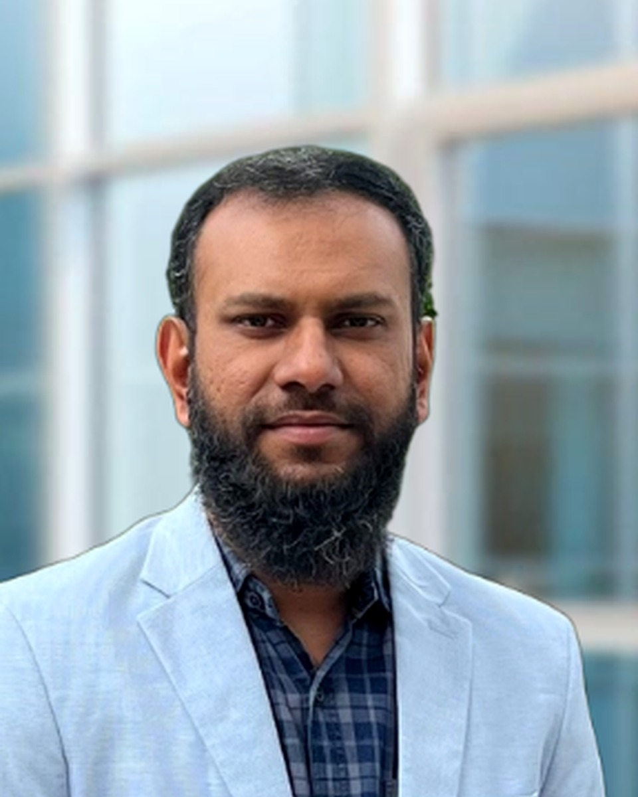

Scientific Strategy
Roadmaps for AI-enabled biology, translational computational medicine, digital biology programmes and research partnerships.
Independent advice for investors, founders, biotech and pharma developing the next generation of AI-enabled therapeutics and technologies.
Available for selected consulting, advisory, investor-review and fractional leadership engagements. Pricing: contact me.

Profile
I translate mechanistic modelling, AI/ML and multimodal biomedical data into disease-relevant digital twin and QSP/QST workflows. My work spans immune-oncology, rare disease digital twins, synthetic health data, model credibility and reproducibility, target identification, drug safety, FAIR infrastructure and scientific strategy. I have also served on BBSRC grant panels, contributing to UKRI-BBSRC assessment of ambitious ideas, people and research programmes.
Advisory focus
Roadmaps for AI-enabled biology, translational computational medicine, digital biology programmes and research partnerships.
Mechanistic, systems pharmacology, genome-scale, logical and hybrid mechanistic–AI modelling for translational decision-making.
Evaluation and design of AI/ML workflows for omics integration, imputation, biomarker discovery and patient stratification.
Independent scientific review of AI biology platforms, data readiness, model credibility, translational plausibility, team capability and technical risk.
Evidence base
Led BioModels strategy, resources and team delivery at EMBL-EBI, with work on reproducible, curated and reusable computational model resources.
Experience across Open Targets and TransQST collaborations involving major pharmaceutical partners and pre-competitive consortia.
Co-led CZI rare disease digital twin modelling and contributed to SYNTHIA synthetic health data and disease modelling activities.
Scientific training and roles across Max Planck Institute, TU Dortmund, Imperial College London, MRC-LMS environment and EMBL-EBI.
Engagement models
Who I work with
Selected publications
CPT: Pharmacometrics & Systems Pharmacology, 2026 · Corresponding author
Nature Reviews Drug Discovery, 2025
BMC Bioinformatics, 2025
Nucleic Acids Research, 2020 · Corresponding author
Molecular Systems Biology, 2021 · Corresponding author
Contact
I am open to selected consulting assignments, advisory roles, technical due diligence and longer-term collaborations where there is a strong scientific and strategic fit.
Pricing: contact me.